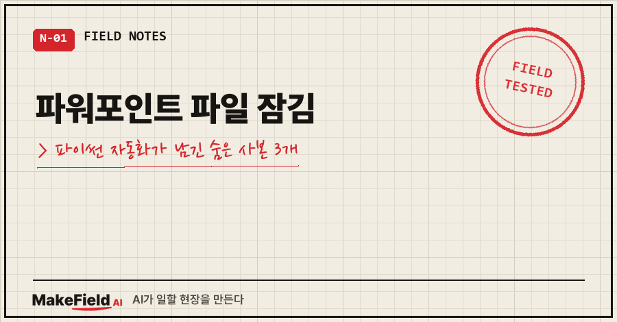
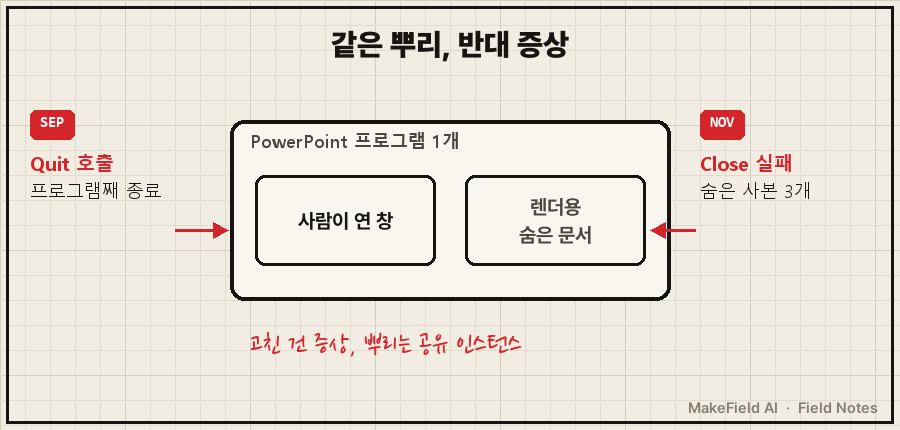
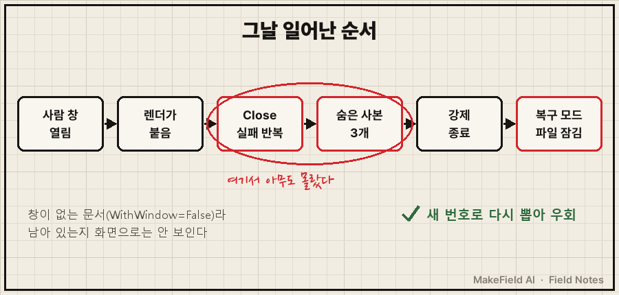
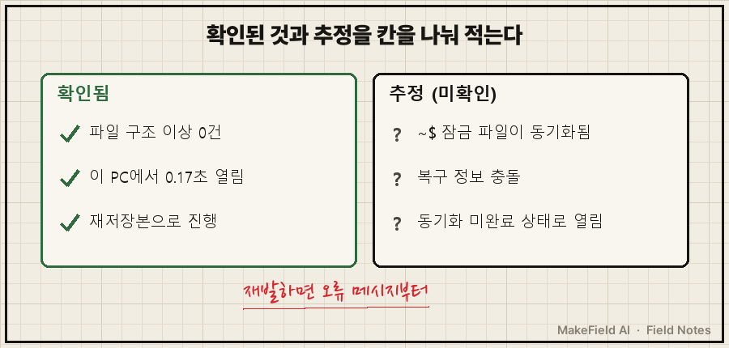

창을 닫아버리는 버그는 9월에 고쳤어요.
두 달 뒤, 같은 렌더 함수에서 반대 방향 사고가 났습니다.
이번엔 창이 안 닫혔고, 대신 눈에 안 보이는 사본 3개가 남았어요. 그게 결국 파워포인트 파일 잠김으로 이어졌고요.
사람이 파워포인트로 열어 둔 파일을 파이썬 자동화가 같이 건드리면, 자동화는 별도 프로그램이 아니라 그 창과 같은 파워포인트 안에서 돕니다. 이때 문서 닫기가 실패하면 숨은 사본이 남고, 사람이 강제 종료하면 다시 열 때 복구 모드와 파일 잠김을 만날 수 있어요. 2026년 11월, 윈도우 + pywin32 + 파워포인트 조합에서 실제로 겪은 일입니다.
저는 현장 제어 쪽에서 15년 일한 엔지니어예요.
보고용 발표자료는 파이썬으로 뽑고, 슬라이드는 PNG로 렌더해서 눈으로 한 장씩 검사합니다. 그 렌더 함수가 오늘 주인공이에요.
1. 9월에 고친 건 '창이 닫히는 문제'였어요
1탄 요약부터 할게요. 자세한 건 이전 글에 있어요.
파워포인트는 단일 인스턴스로 돕니다. 파이썬에서 Dispatch를 부르면 새 프로그램이 뜨는 게 아니라, 이미 떠 있던 파워포인트에 그대로 붙어요. 그래서 끝에 app.Quit()을 부르던 옛 코드가 제가 보던 창까지 닫았습니다.
그때 고친 마지막 구간이 이거예요. 지금도 이 코드 그대로입니다.
finally:
pres.Close()
try:
remaining = app.Presentations.Count
except Exception:
remaining = 1 # 확인 불가 시 살려 두는 쪽으로
if remaining == 0:
app.Quit()내 문서를 닫고 나서도 열린 문서가 남아 있으면 사람 것이니 프로그램은 건드리지 않는다.
여기까지가 9월의 수정이었어요.
그런데 이 수정은 "닫지 않는다"까지만 고친 거였습니다. 사람 창과 자동화가 한 프로그램을 같이 쓴다는 뿌리는 그대로였죠.

2. 이번엔 안 닫혀서 문제였어요: 숨은 사본 3개
상황은 이랬어요.
발표자료를 다듬는 중이었고, 저는 그 파일을 파워포인트로 띄워 두고 있었습니다.
그 상태에서 AI가 수정본을 만들고 렌더를 돌렸어요.
렌더가 제 파워포인트에 붙었고,
Presentation.Close가 실패했고,
다시 돌리면 또 실패했습니다.
반복되는 사이 화면에 안 보이는 구버전 사본 3개가 그 파워포인트 안에 그대로 남아 있었어요. WithWindow=False로 연 문서라 창이 없으니, 저는 남아 있는지조차 몰랐죠.
결국 파워포인트를 강제 종료했습니다.
다시 열자 복구 모드가 떴고, 구버전 파일이 잠겨 버렸어요..
그날은 최신본을 다음 버전 번호로 새로 뽑아서 넘어갔습니다. 잠긴 파일을 풀려고 씨름하기보다 새 파일로 우회하는 게 빨랐거든요.
[당일 기록 요약]
렌더가 사람이 연 PowerPoint 인스턴스를 공유
→ Presentation.Close 실패 반복
→ 숨은 구버전 사본 3개 잔류
→ 강제 종료
→ 다시 열자 복구 모드, 구버전 파일 잠김
→ 최신본을 새 번호로 다시 생성
3. 다음 날 "다른 PC에서 잘 안 열려요" — 점검은 전부 정상
하루 뒤에 후폭풍이 왔어요. 새로 뽑은 최신본이 다른 PC에서 잘 안 열린다는 거였습니다.
파일이 깨졌나 싶어서 pptx 안쪽을 통째로 뜯어봤어요. pptx는 사실 XML 파일 여러 개를 묶은 압축 파일이라, 열어서 구조를 직접 검사할 수 있거든요.
| 점검 항목 | 결과 |
|---|---|
| XML 구조 | 이상 0건 |
| 내부 참조(파일끼리 연결) | 이상 0건 |
| 슬라이드 ID 목록 | 이상 0건 |
| 텍스트 속 제어문자 | 이상 0건 |
| 이 PC에서 열기 | 0.17초 |
| 37장 순회 후 닫기 | 정상 |
전부 정상이었습니다.
제 PC에서는 0.17초 만에 열리고, 37장을 한 장씩 넘겨 보고 닫는 것까지 문제없었어요.
그래서 파워포인트에서 '다른 이름으로 저장'으로 재저장본을 만들어 넘겼습니다. 내용은 같고 파일명만 새 것이에요. 그걸로 일은 진행됐습니다.
4. 원인을 못 찾았을 때 뭐라고 남겼나요
여기서 제일 고민한 건 기록 한 줄이었어요. "재저장으로 해결"이라고 쓰면 거짓말이 됩니다. 재저장본이 열렸다는 건 사실이지만, 왜 원본이 안 열렸는지는 끝내 확인 못 했거든요.
그래서 확인된 것과 추정을 칸을 나눠 적었어요.
| 구분 | 내용 |
|---|---|
| 확인됨 | 파일 구조 이상 0건, 이 PC에서 정상 열림 |
| 확인됨 | 재저장본으로 업무 진행 |
| 추정 | 강제 종료 뒤 남은 잠금 파일(~$로 시작)이 동기화 폴더를 타고 감 |
| 추정 | 복구 정보 충돌 |
| 추정 | 동기화가 덜 끝난 상태에서 열림 |
| 다음 할 일 | 재발하면 오류 메시지 원문부터 확보 |
참고로 ~$로 시작하는 파일은 오피스가 "지금 누가 이 파일을 열고 있다"고 표시하려고 같은 폴더에 만드는 숨김 파일이에요. 정상적으로 닫으면 지워지는데, 프로그램이 제대로 안 꺼지면 남아서 "다른 사람이 사용 중" 같은 잠김을 만들 수 있다는 설명이 Microsoft Q&A 답변에도 있어요(공식 문서가 아니라 커뮤니티 답변이라 참고로만 봐 주세요). 제 경우 이게 원인이었는지는 증거가 없어서 추정 칸에 뒀어요.

AI랑 일하다 보면 이 칸 나누기가 특히 중요하더라고요.
"아마 동기화 문제일 거예요"라는 문장이 한 번 기록에 들어가면, 다음 세션의 AI가 그걸 사실로 읽고 그 위에 다음 판단을 쌓을 수 있거든요. 미확인은 미확인이라고 써 둬야 다음 사람도, 다음 AI도 거기서 다시 시작할 수 있습니다.
여러분은 원인 못 찾은 문제를 기록에 어떻게 적어 두세요? "해결"과 "우회"를 같은 단어로 쓰고 계시진 않나요?
5. 렌더 전에 딱 하나만 확인합니다
이번에 기록에 남긴 교훈은 한 줄이에요.
PowerPoint를 사람이 열어 둔 상태에서는 렌더 전 확인 필요 (같은 인스턴스 공유)코드를 더 똑똑하게 만들기 전에 순서부터 정했어요. 렌더를 돌리기 전에 "그 파일, 지금 파워포인트로 열려 있나?"부터 묻기로요. 열려 있으면 사람이 먼저 닫거나, 렌더를 미룹니다. 9월엔 '끝낼 때'를 고쳤다면, 이번엔 '시작할 때'를 고친 셈이에요.
Q. 파워포인트 파일 잠김이 생기면 당장 뭘 하면 되나요?
제가 실제로 쓴 우회는 두 가지예요. 최신 내용을 새 파일명으로 다시 만들거나, 열리는 PC에서 '다른 이름으로 저장'으로 재저장본을 만드는 것. 둘 다 원인을 없애진 않으니, 재발하면 오류 메시지를 꼭 캡처해 두세요.
Q. 엑셀·워드 자동화도 이런가요?
1탄에서 확인한 대로 붙는 구조(Dispatch)는 같아요. 다만 이번 2탄처럼 숨은 사본이 남는 증상까지 엑셀·워드에서 직접 재현해 본 건 아니라서, 거기까지는 단정하지 않을게요.
9월의 수정이 틀린 건 아니었어요. 닫는 쪽은 지금도 잘 지켜지고 있습니다. 다만 증상 하나를 막았다고 뿌리까지 사라진 건 아니었고, 그 뿌리는 이번엔 반대편에서 튀어나왔죠.
자동화가 사람 작업과 부딪힌 사고들은 makefield.ai에 '확인됨·추정' 칸을 붙인 채로 모아 두고 있습니다.
참고
- 1탄: 파이썬 파워포인트 자동화, 제가 열어둔 창까지 닫아버렸습니다 → https://blog.naver.com/makefield_ai/224418256862
- Microsoft Q&A(커뮤니티 답변) — Excel file locked for editing by myself, '~$' 소유자 파일이 정상 종료 시 삭제되고 비정상 종료 시 남는다는 설명 → https://learn.microsoft.com/en-us/answers/questions/4837368/excel-file-locked-for-editing-by-myself
- 실측: 2026년 11월 개인 작업 기록(렌더 사고·파일 점검 결과, 자료 내용·파일명·버전 번호 제외). 원인은 미확인
태그: #파워포인트파일잠김 #파이썬파워포인트자동화 #파워포인트복구모드 #파워포인트안열림 #pptx안열림 #win32com #pywin32 #오피스COM자동화 #파워포인트PNG변환 #숨은프로세스 #잠금파일 #원인미확인 #자동화부작용 #보고서자동화 #MakeFieldAI